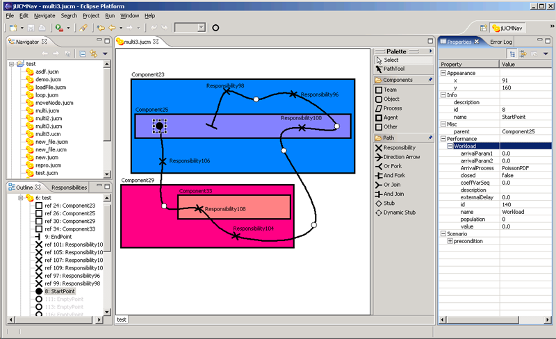
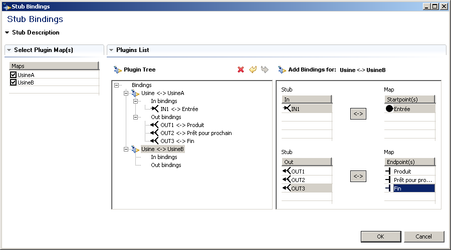

Eclipse is installed by extracting it to a directory.
For example, extract it to c:\eclipse if you are using Windows.
Once Eclipse extracted, extract EMF, GEF and jUCMNav to the same folder.
The archives are to be extracted in the directory containing the Eclipse folder. The files will be extracted into the plugins subdirectory. (See the archives’ file hierarchy to understand why).
If GraphViz dot was downloaded, follow its setup instructions.
Launch Eclipse
It is recommended you run Eclipse with the -clean option (eclipse -clean) as it will load the new plugins appropriately. Sometimes plugins are configured correctly without this option, but you might be missing icons and help files for jUCMNav if you don't.
If you ever feel Eclipse deserves more ram, know that there are virtual machine arguments that you can pass to achieve this purpose: eclipse -vmargs -Xmx512M will give it 512MB of ram.
Quick Tour of Eclipse and jUCMNav

Creating Files
In Eclipse, one must understand that all files and folders must be in projects. You can create a new project by using a wizard: File -> New -> Project.
Choose Simple -> Project.
Once a project is created, select it and create a new jUCMNav file (*.jucm)
File -> New -> Other
jUCMNav -> Use Case Map, Click next.
Choose the containing project and name your .jucm file.
Click finish.
Later, you can open and close files by using the Navigator view. You can also use the File -> Import wizard to import existing files from the file system into your Eclipse workspace.
Perspectives
Now that you have an open file, you might be wondering why your interface does not look exactly like the above screenshot. This is because Eclipse uses perspectives to layout all the windows in the interface. Perspectives can be saved, reset and changed.
jUCMNav has its own perspective.
Window -> Open Perspective -> Other
Choose jUCMNav.
Later, you may return to another perspective by using the alternatives presented in the Windows menu bar or by clicking on the >> button at the top right of your screen.
Views and Editor
Navigator View
Top left corner
Contains all the files in your projects.
Editor
Center of the page.
The main location for manipulating Use Case Maps.
When one opens a file, an editor is opened.
Because one file can contain multiple UCMs, this editor has multiple tabs at the bottom.
Will be studied in greater depth in further sections.
Palette
There is a collapsible palette inside of the editor, on its right side.
It can be moved to the left side or collapsed if screen real estate is scarce.
The palette contains elements that can be inserted into a diagram.
Will be studied in greater depth in further sections.
Press ESC to replace the currently selected tool with the selection tool.
Outline View
Bottom left corner
Shows an outline of the contents of the URN specification currently loaded editor.
From this view, you will be able to add new use case maps, delete old ones and manipulation component and responsibility definitions.
Selecting something in the editor will reflect the selection in the outline and vice-versa.
Properties View
Right side of screen; can be moved elsewhere or closed if you have a small resolution.
When an element is selected in the Editor, its properties are shown here.
For complex properties, dialogs or wizards may be offered to simplify the manipulation.
Responsibilities View
Behind the outline view.
Shows a list of names/descriptions of responsibilities in the current map.
[As of writing, not yet implemented]
Toolbar
At the top of the interface, there is a toolbar of buttons.
It contains a zoom selector, autolayout mechanism, undo-redo buttons and allows you to go back through your navigation history.
Part II - Basic Editing
Keyboard shortcuts
The following text discusses actions that can be performed using the mouse.
Most of these can be done using the standard GEF editor keyboard shortcuts.
With an element selected, use the arrow keys to change your selection. Hold the ctrl or select key while using the arrow keys to expand your selection.
With elements selected, hit the . (period) key. Your arrow keys will now allow you to move the selected elements. Hit enter to confirm the new location.
Using the . (period) key, you can cycle between move and resize different bounds. For example, select a component, hit period twice and you can resize its right bound using the arrow keys and confirm the new size using enter.
Components
Insertion / Moving
To insert a component reference, click on its kind in the palette and click in the editor to insert it.
You may also click and drag when inserting to resize it on creation.
If you click anywhere on the component reference, it is selected.
Once selected, you can move the component the screen.
If you click on the bounds of the component, you may resize it.
References versus definitions
When creating a component reference, you also create a new component definition. See the outline view for a list of all components in a file.
All component references must reference a definition, but not all definitions must have references.
You can change the definition of a component reference in the properties.
When creating a component, a label will be created automatically.
The label represents the name of the component definition. If you change the name field in the properties, you will change the component definition’s name. All component references in the editor will be updated.
Note that components definitions must have unique names.
You can also double click on a label to change it directly in the editor.
Other properties
You can change the fill and line color of components in the properties. All references will be updated. Note that if filled is false, the fill color will be ignored; the component will appear transparent.
Components can have different kinds. You can change the component kind in the properties. Changing the kind will have a visual impact on the figure.
One cannot move or resize fixed components.
Creating Paths
Creation
To create a path, select the path tool in the palette.
Click once in the editor and notice a small path being created.
Notice the end point is selected.
Click elsewhere in the editor.
The path will be extended.
Repeat until satisfied and click the selection tool in the palette to disable this behaviour.
Extensions
Select a start or end point, choose the path tool in the palette.
Your next click will extend the path.
To insert an empty point on an existing path, click on a node connection with the path tool selected. Notice the new empty point was added and that the path’s empty point is selected.
Inserting path elements
To insert path elements on a path, simply select the path element in the palette and click on the node connection on which it is to be inserted.
As with component references and definitions, the responsibilities that are inserted on a path are references. See the components section for more information about references versus definitions.
Elements bound to components
By default, any element moved onto a component is bound to it.
When bound, elements (components or path nodes) are moved and resized automatically if one moves or resizes the parent.
If you move a component behind other elements, these will not be bound. Automatic binding occurs when moving elements onto components.
If you wish to bind these other elements to a component, you may use the contextual menu option to do so.
One can bind/unbind an element from its parent using either the contextual menu or property page.
One can bind/unbind all enclosed elements from a component using the contextual menu.
Note the special behavior concerning fixed components.
Working with labels
Some labels are created automatically when an element is created: start points, end points, responsibilities, stubs and components.
These labels contain the name of the element.
They can be moved around freely. When the labelled element is moved, the labels will move as well.
You can hide these labels by deleting them (contextual menu or delete key).
The name of the element can be changed directly in the editor by double clicking on the label.
Forks/Joins
(discuss from palette, contextual menu or drag & drop)
To insert a fork or join on a path, you can use the palette and do as you would with any other path node.
You can also use the palette and insert them directly on an empty point.
The contextual menus also allow you to replicate the same behaviour.
It is also possible to drag and drop a start point on a node connection or empty point to form an OR fork. The same is applicable for an dragging an end point on a node connection or empty point and creating an OR join.
If you need to change an OR fork/join into an AND fork/join, use the contextual menu.
Additional branches can be inserted on forks and joins using the contextual menu or by using the same drag and drop technique illustrated above.
Conditions
The node connections exiting OR forks, timers and waits can have conditions that will be illustrated visually.
To insert a condition, select the node connections and modify its properties. You must change the label field to the condition you want to be displayed. The expression field is used for scenario evaluation.
Start points can have pre-conditions and end points, post-conditions. The behaviour is the same.
To hide a condition label, change its text to an empty string or delete it.
You can directly edit a condition in the editor.
Deletion
You can select a path node and use the contextual menu or press the delete key to remove it from the map. If a component or responsibility reference is deleted, its definition is not affected.
If a stub, join or fork is deleted, the existing branches will be truncated.
You can delete a portion of a path by deleting its start point or end point.
If only one entry/exist path subsists for a join/fork, it will be replaced with an empty point.
If no entry paths and no exist paths subsist for a stub, it will be deleted as well.
You can select multiple elements using your mouse or the select all option and delete them all.
Note that as of writing, you might have to repeat this operation to remove all items from a map.
Waiting places, timers and connects
Timers can have a timeout path. Use the context menu to insert a timeout path. It has a special icon to help identify it.
As mentioned previously, waiting places and timers have conditions. The timeout path condition is the logical opposite of the regular path's condition. Therefore, one cannot add a condition on the timeout path.
To create a synchronous connection, select both an end point and a starting point, waiting place or timer to choose the connect elements option in the contextual menu.
Once connected, the path elements will move together. If they overlap, simply use the outline to select the one beneath to modify its properties.
To disconnect the elements afterwards, use the contextual menu.
Asynchronous connections work similarly, but using an empty point and starting point, waiting place or timer.
Drag and drop also works to create connections, for waiting places and timers only.
Part III - Advanced Editing
Working with Multiple Maps
To create a new map, right click on the URNSpec in the outline view and choose the “Add Use Case Map” option.
Notice a new map has been added in the outline and a new tab exists at the bottom of the page.
The new map has been opened in the editor.
To return to your previous map, click on its tab or its entry in and it will be reopened.
Furthermore, the toolbar contains a back and next arrow to browse through your navigation history.
Zooming and view modes
There are controls in the toolbar located above the editor. Next to the obvious undo/redo buttons is located the zoom level drop down box.
Select a zoom level and the editor will be updated.
Note that only the currently opened map will be affected.
To the right of the zoom level drop down box is the view mode drop down box.
Using this drop down box, one can choose to hide all empty points from the editor or to hide all empty points and stub labels.
These modes are useful when exporting images to be included in articles.
Auto-layout
In the toolbar, there is also a round button. Click on it to open the auto-layout wizard.
If you have GraphViz dot installed, the wizard will automatically position the path nodes and components in the current map. As of writing, this is only a prototype and its functionality may change so it will not be documented here.
Using Stubs

Stub plugins
Open a stub’s contextual menu and select the “Edit stub plugins” option.
This view allows you to bind a stub to other maps.
The left portion of the screen presents a list of possible maps that this stub can be bound to.
If the checkbox next to a map is checked, it is bound to this stub. Note that static stubs can only be bound to one map.
Check one box and observe the plugin tree at the middle of the screen.
Plugin tree
The plugin tree lists all the current bindings. Click on the binding between a map and the plugin and notice the new panel to the right of the screen.
The top part is for in bindings and the bottom, out bindings. This view presents the different bindings that could be added to the binding tree.
This panel has two columns. To the left are node connections that enter or exit the stub and, to the right, the start points or end points in the plugin map. To associate them, simply select one connection in the left part and a path node in the right part and click the bind (<->) button.
If you ever need to delete this binding, select it in the plugin tree and press the delete button.
Exporting Maps
To export a map to an image (*.jpg or *.bmp), select a map’s background, open the contextual menu and select the export option.
Alternatively, you could access the same option in the map’s or URNSpec’s contextual menu in the outline or by using the File -> Export menu.
Select the path where the images should be saved and the file type and press finish.